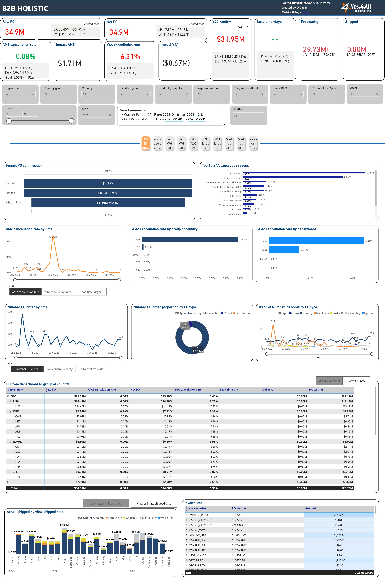

Bấm vào bất kỳ ô chỉ số, biểu đồ hoặc bảng nào trên ảnh Dashboard bên trái để xem giải thích ở khung bên phải

Dashboard B2B HOLISTIC theo dõi hoạt động bán hàng sỉ và bán lẻ ra thị trường của Yes4All qua 4 hình thức bán hàng chính:
| Luồng Bán Hàng | Xem Ở Trang Nào? | Hiểu Đơn Giản Cách Vận Hành |
|---|---|---|
| 1. Amazon AVC Direct Import (DI) | PO DI operation DI Target tracking Market demand |
Amazon đặt đơn hàng sỉ số lượng lớn theo container. Yes4All giao hàng trực tiếp cho Amazon ngay tại cảng xuất khẩu (Việt Nam hoặc Trung Quốc) theo giá FOB. Amazon tự thuê tàu chở hàng về kho của họ. Thời gian từ lúc đặt đơn đến lúc giao hàng (Lead time) thường kéo dài 45–75 ngày. |
| 2. Amazon AVC Warehouse (WH) | PO WH operation WH Target tracking Market demand |
Hàng của Yes4All đã được nhập sẵn về nằm tại các kho nội địa ở Mỹ hoặc quốc tế. Khi Amazon cần lấy hàng nhanh, Amazon đặt đơn PO WH và lấy hàng trực tiếp từ kho nội địa của Yes4All (thời gian xử lý nhanh, chỉ khoảng 8–13 ngày). |
| 3. Amazon AVC Dropship (AVC DS) | PO AVC DS | Khách mua lẻ đặt hàng trên web Amazon, nhưng hàng không nằm ở kho Amazon. Amazon chuyển thông tin đơn hàng (Direct Fulfillment) sang để kho Yes4All đóng gói lẻ từng kiện và giao thẳng cho hãng vận chuyển chở tới nhà khách. |
| 4. Kênh Đối Tác Đa Sàn Spreetail | Spreetail Tracking | Yes4All bán sỉ hàng hóa (cả đơn Direct Import và đơn kho nội địa Domestic) cho đối tác Spreetail tại Mỹ. Sau đó, Spreetail giữ hàng tại hệ thống kho ở các bang của Mỹ (PA, NV, IN, GA, TX, WA, NE) và đăng bán lẻ trên nhiều sàn: Amazon.com, Target.com, Walmart.com, eBay.com, Lowes, BestBuy... |
Toàn bộ dữ liệu trên Dashboard đều được đồng bộ tự động về cơ sở dữ liệu trung tâm của Yes4All (PostgreSQL — y4a_datamart) từ các báo cáo gốc dưới đây:
| Nhóm Thông Tin | Báo Cáo / Hệ Thống Gốc | Bảng Trong Power BI | Cách Lấy Số & Quy Tắc Quan Trọng |
|---|---|---|---|
| Đơn đặt hàng PO Amazon (Kênh DI & WH) | Amazon Vendor Central (Sales Order AVC DI / WH & Golden DI Newsletter) |
fact_POfact_PO_WHfact_DI_frequencyfact_WH_frequency |
• Ghi nhận số lượng Amazon đặt ban đầu (qty_request), số lượng Yes4All xác nhận giao (qty_yes4all_confirm) và đơn giá mới nhất (lasted_cost).• Tự động gắn loại đơn PO: Auto buy, Manual buy, Born to run, Golden DI.• Mọi đơn giá ngoại tệ được nhân với tỷ giá của Finance để quy hết về USD. |
| Lý do Hủy đơn PO (Cancel Reasons) | Bảng theo dõi lý do hủy đơn của đội Vận hành (SOP Analyst Log) | fact_reasonfact_reason_WH |
• Cách phân biệt ai hủy đơn: Nếu cột lý do gốc ghi là "Amazon close PO" → Tính vào AMZ Cancel (Amazon hủy). Tất cả các lý do còn lại (như No vendor, Channel not fit, Order below MOQ...) → Tính vào Y4A Cancel (Yes4All hủy).
|
| Đơn hàng Dropship (AVC DS) | Amazon Direct Fulfillment ghép với hệ thống kho nội bộ SOMS | fact_PO_AVC_DS |
• Lấy số lượng và doanh thu đơn khách đặt theo ngày đặt hàng (order_date) trên Amazon, sau đó ghép với ngày kho bàn giao hãng vận chuyển (ship_date) từ hệ thống SOMS.
|
| Hóa đơn Tài chính (Invoice info) | Hệ thống Kế toán Finance (AVC Invoice Detail) | fact_invoice_POfact_invoice_PO_WH |
• Lấy danh sách số hóa đơn (invoice_number), mã PO (po_number) và số tiền xuất hóa đơn thực tế (amount).
|
| Doanh số bán ra (GMV), Lượt xem (Glance view), Lợi nhuận (Net PPM) & Tồn kho Amazon | Amazon Retail Analytics (Manufacturing View; riêng thị trường Canada lấy thêm Sourcing View) |
fact_market_demand |
• Cách ghép số Tháng cũ & Tháng hiện tại: Các tháng đã qua lấy 100% từ báo cáo chốt tháng (MONTHLY). Tháng hiện tại chưa hết tháng thì lấy từ báo cáo ngày (DAILY): doanh thu và số lượng bán (Units) được cộng dồn từ đầu tháng; còn số tồn kho (inventory) và tỷ lệ hết hàng (soroos_rate) chỉ lấy đúng ngày mới nhất.• Riêng thị trường Canada: Doanh thu, số lượng bán, lượt xem, giá bán và tồn kho xấu lấy từ Sourcing View; còn tỷ lệ hết hàng ( Soroos) và Net PPM lấy từ Manufacturing View.
|
| Tồn kho tuần (WOC), Tồn kho tháng (MOC) & Hàng đang về (Incoming) | Bảng tính toán Tồn kho & Dự báo cầu theo tuần | fact_woc_v2fact_mocfact_incoming_invfact_forecast |
• Ước tính số tuần đủ bán (WOC = Tồn kho chia cho sức bán trung bình 13 tuần) và số tháng đủ bán (MOC = Tồn kho chia cho sức bán trung bình 6 tháng).• Theo dõi lượng hàng dự kiến nhập kho Amazon từ Week +1 đến Week +10.
|
| Dữ liệu Bán hàng, Tồn kho, Quảng cáo & Đơn PO kênh Spreetail | Cổng dữ liệu đối tác Spreetail Partner Portal | fact_spreetail_sales_channelfact_spreetail_inventoryfact_spreetail_sales_orderfact_spreetail_adsfact_spreetail_promofact_spreetail_sell_through |
• Tách thành 6 bảng theo dõi: (1) Doanh số bán lẻ trên từng sàn (Amazon, Walmart, Target, eBay...), (2) Tồn kho tại từng bang của Mỹ, (3) Đơn PO Spreetail đặt mua từ Yes4All, (4) Chi phí quảng cáo, (5) Chi phí khuyến mãi, và (6) Tốc độ bán ra 3 tháng (Sell-Through 3M).
|
| Danh mục Sản phẩm, Phòng ban, Phân hạng RFM & Trạng thái khóa Ads | Hệ thống PIMS, Master Data của BI & Báo cáo Amazon Ads | dim_productdim_departmentdim_rankingfact_rfmdim_block_ads |
• Ánh xạ mỗi mã ASIN / SKU về đúng Phòng ban phụ trách (SSO, SFO, HMD, SER), ngành hàng PIMS, phân hạng RFM và kiểm tra xem ASIN có đang bị khóa chạy quảng cáo (INELIGIBLE / AD_MISSING_DECORATION) hay không.
|
Dành cho Data Engineer / BI Developer: Sơ đồ dưới đây cho biết dữ liệu đi từ 6 nhóm báo cáo nguồn, qua bước xử lý trên PostgreSQL (172.27.209.2:5432 / y4a_datamart & y4a_sop_ops), nạp vào các file B2B HOLISTIC.SemanticModel/definition/tables/*.tmdl và hiển thị lên 7 trang báo cáo.
AVC DI, AVC WH), Direct Fulfillment (AVC DS), Retail Analytics (Manufacturing View & riêng Canada có thêm Sourcing View), Inventory Health, Net PPM, Traffic (Glance Views, Rep OOS).fact_forecast)."Amazon close PO" và các lý do lỗi cung ứng từ Y4A).ship_date cho đơn Dropship; bảng hóa đơn thực thu AVC Invoice Detail và bảng tỷ giá USD dim_exchange_rate.dim_product), phòng ban (dim_department), phân hạng RFM / Lifecycle và danh sách ASIN bị khóa Ads (dim_block_ads).y4a_datamart & y4a_sop_ops (Host: 172.27.209.2:5432).* COALESCE(exchange_rate, 1)).golden_check (Golden DI, Auto buy, Manual buy, Born to run); gắn cancel_owner = 'Amazon' khi LOWER(TRIM(reason)) = 'amazon close po', ngược lại là 'Y4A'.fact_market_demand, các tháng đã chốt lấy từ report_type = 'MONTHLY'; các dòng 'DAILY' chỉ lấy khi end_date > MAX(MONTHLY end_date) của từng quốc gia.country_asin, country_sku và region_asin (gộp 5 nước GBR, DEU, FRA, ITA, ESP thành 'EU-UK_' || asin).CALENDAR1[dt]: Nối với ngày tạo đơn / ngày báo cáo (created_at, order_date, end_date, snapshot_date).
CALENDAR_SHIP[dt]: Nối với ngày hạn giao tàu (ship_window_end) dùng cho chế độ Ship Date.
dim_country, dim_department, dim_product, dim_productgroup_amz, dim_ranking, fact_rfm, dim_block_ads.Parameter & Parameter_num_PO (đổi chỉ số biểu đồ PO).
DI_target (cấu trúc cột cho bảng Summary table).
dim_metric_toggle (đổi Units / Amount $ cho Spreetail).
measure.tmdl, measure_ship.tmdl, switch_metric.tmdl, measure_spreetail.tmdl.pages.json: 7 trang chính + 2 trang phụ chế độ Ship Date (cho PO DI & PO WH) + 1 trang Tooltip.NoFilter): Các biểu đồ đường (Line Charts) được tắt lọc từ Slicer Month/Year trong page.json để luôn vẽ đủ chuỗi 12–24 tháng.View Department ↔ View Country) và đổi ngày giao hàng (Actual ACDD ↔ Estimate ship_window_end).switch_metric.tmdl (Fontcolor_*, ImpactColorAllMeasure).[1. UPSTREAM SOURCES] [2. POSTGRESQL (172.27.209.2:5432)] [3. POWER BI SEMANTIC MODEL (.tmdl)] [4. REPORT PAGES]
===================== =================================== ==================================== =================
+---------------------------+ +-----------------------------------+ +----------------------------------+
| Amazon Vendor Central | | Schema: y4a_datamart | | Fact Tables (Import Mode) |
| • Sales Orders (DI / WH) | ---ETL---> | • fact_po_di_view + exchange_rate | --M Partition-> | • fact_PO • fact_PO_WH | ------------+
| • Golden DI Newsletter | | • fact_po_wh_view + exchange_rate | | • fact_DI_freq • fact_WH_freq | |
+---------------------------+ +-----------------------------------+ +----------------------------------+ +-> [Page 1: PO DI operation]
^ ^ +-> [Page 2: PO WH operation]
+---------------------------+ +-----------------------------------+ | | +-> [Page 4: DI Target tracking]
| SOP Analyst Cancel Log | ---ETL---> | • fact_reason_di / fact_reason_wh | --M Partition-> +--+ fact_reason / fact_reason_WH +-> [Page 5: WH Target tracking]
| Finance AVC Invoice | ---ETL---> | • fact_invoice_po_di / _wh | --M Partition-> +--+ fact_invoice_PO / _WH
+---------------------------+ +-----------------------------------+ |
| (1:N Active: created_at -> CALENDAR1[dt])
+---------------------------+ +-----------------------------------+ | (1:N Active: ship_window_end -> CALENDAR_SHIP[dt])
| AVC Direct Fulfillment | ---ETL---> | • fact_po_avc_ds + SOMS ship_date | --M Partition-> • fact_PO_AVC_DS -------------------------------> [Page 3: PO AVC DS]
+---------------------------+ +-----------------------------------+
+----------------------------------+
+---------------------------+ +-----------------------------------+ | Market Demand & Inventory Facts |
| Amazon Retail Analytics | | • MONTHLY (closed months) | | • fact_market_demand |
| • Manufacturing View | ---ETL---> | • UNION DAILY (dt > max_monthly) | --M Partition-> | • fact_channel_allocated (USD) | ------------> [Page 6: Market demand]
| • Canada Sourcing View | | • CAN Hybrid: Sourcing + Mfg View | | • fact_woc_v2 (Rolling 13W) |
| • Weekly Forecast & WOC | | • WOC / MOC / Incoming Next W1-10 | | • fact_moc (Rolling 6M) |
+---------------------------+ +-----------------------------------+ | • fact_incoming_inv (W+1..W+10) |
| • fact_forecast |
+---------------------------+ +-----------------------------------+ +----------------------------------+
| Spreetail Partner Portal | | Schema: y4a_datamart / y4a_sop_ops| | 6 Spreetail Fact Tables |
| • Sales Channel & Orders | ---ETL---> | • spreetail_sales_channel / order | --M Partition-> | • fact_spreetail_sales_channel |
| • Warehouse Inventory | | • spreetail_warehouse_inventory | | • fact_spreetail_inventory | ------------> [Page 7: Spreetail Tracking]
| • Advertising & Promo | | • spreetail_ads / promo / st_3m | | • fact_spreetail_sales_order |
+---------------------------+ +-----------------------------------+ | • fact_spreetail_ads / promo / st|
+----------------------------------+
+---------------------------+ +-----------------------------------+ ^
| PIMS & BI Master Data | ---ETL---> | • dim_product / dim_department | --M Partition-> [Shared Dimensions: CALENDAR1, CALENDAR_SHIP,
| Amazon Sponsored Products | | • dim_ranking / rfm / block_ads | dim_country, dim_department, dim_product, dim_ranking, dim_block_ads]
+---------------------------+ +-----------------------------------+
Sơ đồ dưới đây tóm tắt cách các cột dữ liệu gốc được tính thành các chỉ số (Measures) trong 4 file measure.tmdl, measure_ship.tmdl, switch_metric.tmdl và measure_spreetail.tmdl:
[Cột dữ liệu trong fact_PO / fact_PO_WH]
├── qty_request * lasted_cost * exchange_rate ──────► [raw_po_curent] (Raw PO $)
│ │
├── reason = "Amazon close PO" (amz_cancel_usd) ─────► (-) AMZ Cancel ($)
│ ├──► [AMZ cancelation rate] = AMZ Cancel / Raw PO
│ └──► [Impact AMZ] = - (Rate_CP - Rate_LY) * Raw_PO_CP
│ ▼
├── raw_po - amz_cancel_usd ────────────────────────► [net_po_curent] (Net PO $)
│ │
├── reason <> "Amazon close PO" (y4a_cancel_usd) ────► (-) Y4A Cancel ($)
│ ├──► [Y4A cancelation rate] = (Net PO - Confirm) / Net PO
│ └──► [Impact Y4A] = - (Rate_CP - Rate_LY) * Net_PO_CP
│ ▼
└── qty_yes4all_confirm * lasted_cost * fx ─────────► [Value DI/WH confirm] (Y4A Confirm $)
├──► ACDD IS NULL ──► [processing_curent] (Processing $)
└──► ACDD IS NOT NULL ──► [delivery_curent] (Shipped $)
[Cách tính Lead Time & 2 chế độ ngày]
• [Lead time qty] = SUMX(fact_PO, lead_time_days * qty_yes4all_confirm) / SUM(qty_yes4all_confirm)
• Order Creation Date : Lọc theo CALENDAR1[dt] -> dùng measure trong measure.tmdl
• Ship Date : Lọc theo CALENDAR_SHIP[dt] -> dùng measure có đuôi _Ship trong measure_ship.tmdl
[TẦNG 1: Value DI / WH confirm ($)]
SUM(confirm_usd)
__________________|__________________
| |
▼ ▼ (× Nhân)
[TẦNG 2 TRÁI: Number of ASINs have PO] [TẦNG 2 PHẢI: Sales per ASIN ($)]
DISTINCTCOUNT(region_asin) [confirm > 0] = Value confirm / No of ASINs have PO
________|________ ________|________
| | | |
▼ (Góc nhìn 1) ▼ (Góc nhìn 2) ▼ ▼ (× Nhân)
[DI Penetration %] [Sell in coverage %] [Num PO per ASIN] [ASIN order value ($)]
= PO ASINs / = PO ASINs / = SUM(num_po) / = Value confirm /
Sell-out ASINs Active ASINs PO ASINs SUM(num_po)
× × ______|______
[No ASIN sell out] [No ASIN active] | |
(shipped_units > 0) (fact_active_asin) ▼ ▼ (× Nhân)
[UPT (Units)] [DI / WH ASP ($)]
= Confirm Qty = Value confirm /
/ SUM(num_po) Confirm Qty
[Cách hoạt động của bảng Summary table cuối trang — switch_metric.tmdl]
• Bảng phụ 'DI_target' tạo 3 tầng tiêu đề cột: Mom -> Indicator -> Subname ("Actual" | "Impact").
• Measure [DI_table] dùng SWITCH(TRUE(), ...) để gọi đúng công thức cho từng cột.
• Measure [ImpactColorAllMeasure]: Khi cột là "Impact", tô màu "#33A856" (Xanh) nếu >= 0, "#C62330" (Đỏ) nếu < 0.
[NHÓM A: CHỈ SỐ CỘNG DỒN THEO NGÀY — Cộng trực tiếp theo CALENDAR1[dt] trên fact_market_demand]
• [GMV_current] = SUM(shipped_gmv) ──┐
• [Shipped_unit_current] = SUM(shipped_units) ──┼──► [ASP_curent] = DIVIDE(GMV, Shipped_units)
• [glance_view_current] = SUM(glance_views) ──┴──► [CR rate] = DIVIDE(Shipped_units, Glance_views)
• [Return rate] = DIVIDE(SUM(customer_returns), SUM(shipped_units))
• [Soroos_rate_current] = DIVIDE(SUM(soroos_glance_views), SUM(glance_views))
• [Net PPM] = DIVIDE(SUM(net_ppm_Confirm), SUM(gmv_have_net_ppm))
[NHÓM B: CHỈ SỐ TỒN KHO CUỐI KỲ — Chỉ lấy ngày mới nhất, dùng REMOVEFILTERS(CALENDAR1)]
• [Latest_Date_Inventory] : Tìm MaxDate = MAX(end_date) có inventory IS NOT NULL
──► CALCULATE(SUM(inventory), REMOVEFILTERS(CALENDAR1), end_date = MaxDate)
• [Latest_unhealthy_inven] : Tìm MaxMonthlyDate = MAX(end_date) có report_type = "MONTHLY"
──► CALCULATE(SUM(inventory_unhealthy), REMOVEFILTERS(CALENDAR1), end_date = MaxMonthlyDate)
──► [unhealthy_inven_amt_rate] = Latest_unhealthy_inven_amt / Latest_Inventory_amt
[NHÓM C: TỐC ĐỘ TIÊU THỤ 3 THÁNG & SỐ TUẦN / THÁNG ĐỦ BÁN]
• [Sell_through] (3 tháng) = Last3month_shipped / (Beg_Inventory_3M_Ago + Last3month_net_receive)
• [WOC] (fact_woc_v2) = SUM(inventory_simulation) / SUM(avg_sales_13w)
• [MOC] (fact_moc) = SUM(opening_inventory) / SUM(rolling_avg_sales_6m)
[6 BẢNG DỮ LIỆU SPREETAIL — Nối chung qua dim_product[sku] & CALENDAR1[dt]]
1. fact_spreetail_sales_channel ──► [Spreetail GMV], [Spreetail Net Revenue], [Spreetail Shipped Units],
[Spreetail ASP], [Spreetail AoV], [Spreetail Return Rate],
[Spreetail AMZ GMV Contribution %] (lọc sales_channel = "Amazon.com")
2. fact_spreetail_ads ──► [Spreetail Ad Spend], [Spreetail ACOS] (= Spend / Ad Sales),
[Spreetail TACOS] (= Ad Spend / Spreetail GMV)
3. fact_spreetail_promo ──► [Spreetail Promotion Spend]
4. fact_spreetail_sell_through ──► [Spreetail Sell-Through 3M %] (= Last 3M Net Shipped / Base Inv + Incoming)
5. fact_spreetail_sales_order ──► [Spreetail PO Count], [Requested Qty], [Accepted Qty], [Fill Rate %],
[Canceled PO Units], [Lost PO Value] (= Accepted $ - Requested $)
[CÁCH LỌC CHÉO MÃ SKU GIỮA BẢNG BÁN HÀNG, TỒN KHO & DỰ BÁO BẰNG TREATAS]
• Khi chọn 1 mã SKU trong bảng Tồn kho (fact_spreetail_inventory[part_number]):
Measure [Spreetail GMV] dùng TREATAS(VALUES(fact_spreetail_inventory[part_number]),
fact_spreetail_sales_channel[part_number]) để lọc doanh số tương ứng.
• Khi ghép số Dự báo (Forecast) vào bảng SKU Performance:
Measure [Spreetail Forecast Units] dùng USERELATIONSHIP(fact_forecast[week], CALENDAR1[dt])
+ TREATAS(VALUES(fact_spreetail_sales_channel[part_number]), fact_forecast[sku])
[CÁCH TÍNH SỐ NGÀY TỒN KHO ĐỦ BÁN BÌNH QUÂN GIA QUYỀN (WEIGHTED DOS BY QOH)]
• Bước 1: Lấy ngày chốt tồn kho mới nhất PeriodLastDate = MAX(fact_spreetail_inventory[snapshot_date])
• Bước 2: Lọc các dòng kho tại PeriodLastDate có warehouse_quantity_on_hand > 0
• Bước 3: [Spreetail Days of Supply] =
SUMX(FilteredData, warehouse_days_of_supply * warehouse_quantity_on_hand)
-------------------------------------------------------------------------
SUMX(FilteredData, warehouse_quantity_on_hand)
Thay vì phải mở từng file trong B2B HOLISTIC.SemanticModel/definition/tables/*.tmdl và relationships.tmdl, bạn có thể nhìn trực tiếp sơ đồ kết nối giữa 8 bảng danh mục dùng chung (Dimensions) ở trên và các nhóm bảng dữ liệu (Facts) ở dưới:
1:N với ngày tạo đơn (created_at, order_date), ngày báo cáo (end_date, snapshot_date).1:N với cột ngày hạn giao tàu ship_window_end.USA, CAN, MEX, DEU, GBR, JPN...) và Cụm thị trường (country_group: USA, DIP5, EU/UK, GPE, JPN).SSO, SFO, HMD, SER). Đã khử trùng GROUP BY sku, country để đảm bảo khóa 1:N sạch.titleinternal), ngành hàng nội bộ (mastercategory), mã asin & sku.product_group) gắn theo từng cặp Quốc gia + ASIN.rfm_final), vòng đời sản phẩm (lifecycle) và nhóm cảnh báo segment_si / segment_so.INELIGIBLE, AD_MISSING_DECORATION, NORMAL).created_at / order_date ──► CALENDAR1[dt]ship_window_end ──► CALENDAR_SHIP[dt] (chế độ Ship Date)country_sku ──► dim_department, dim_productcountry_asin ──► dim_productgroup_amz, dim_ranking, fact_rfmraw_po, net_po_usd, confirm_usd, processing_usd, delivery_usd) đã nhân tỷ giá USD.fact_reason: LOWER(TRIM(reason)) = 'amazon close po' tách riêng cho Amazon hủy; các lý do còn lại tính vào Yes4All hủy.
month_date ──► CALENDAR1[dt]country ──► dim_country[country_code]region_asin = Gộp 5 nước EU (GBR, DEU, FRA, ITA, ESP) thành EU-UK_<asin>region_asin để khi đếm số lượng ASIN có đơn (Number of ASINs have PO) và số đơn mỗi ASIN (Num PO per ASIN) không bị đếm trùng giữa 5 nước Châu Âu.autodetectRelationships để tránh Power BI tự nối khóa trùng trên fact_DI_frequency.
fact_market_demand[end_date] & fact_channel_allocated[month] ──► CALENDAR1[dt]country_asin / country_sku ──► dim_department, dim_product, dim_block_adsfact_forecast[week] ──► CALENDAR1[dt] (bật qua USERELATIONSHIP)fact_market_demand, các chỉ số tồn kho (inventory, inventory_amt, inventory_unhealthy) là số cuối kỳ — khi viết DAX bắt buộc lấy tại MAX(end_date) kèm REMOVEFILTERS(CALENDAR1), không dùng SUM() trực tiếp.fact_channel_allocated: đã lọc label_currency = 'USD' trong M-Query để không cộng trùng dòng tiền bản địa.
order_date / snapshot_date / po_date / report_month ──► CALENDAR1[dt]part_number / sku ──► dim_product[sku] & dim_department[sku]part_number giữa bảng Bán hàng, bảng Tồn kho và fact_forecast[sku]QOH Network, COH $, Weighted DOS, In Transit, On Order) luôn lấy tại ngày báo cáo mới nhất MAX(snapshot_date).